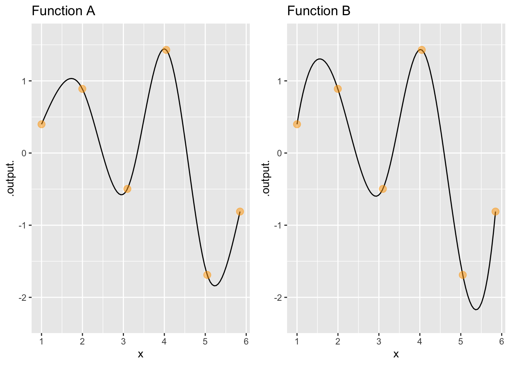
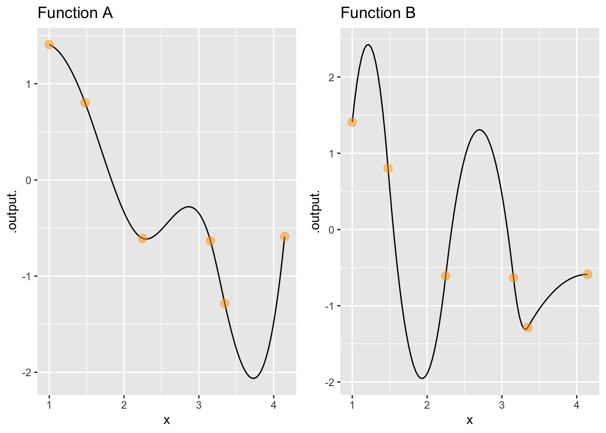
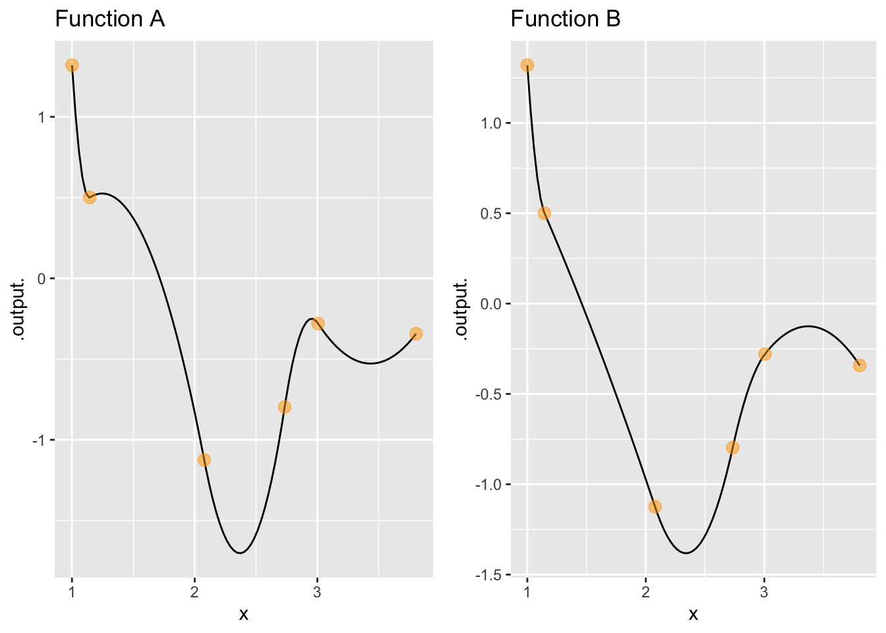

question id: ant-lend-scarf-1
Chap 48 Exercises
\[ \newcommand{\dnorm}{\text{dnorm}} \newcommand{\pnorm}{\text{pnorm}} \newcommand{\recip}{\text{recip}} \]
Exercise 1 Referring to the quadratic spline interpolating functions in XREF not implemented yet, note that the different functions all go through the knots. The difference between them is the derivative at \(t=4\). Reading from the graphs, say what the slope \(\partial_t x(t)\left.{\Large\strut}\right|_{t=4}\) is in each of the graphs:
- What is \(\partial_t x(t)\left.{\Large\strut}\right|_{t=4}\) for the function in panel A?
-9 -5 -2 -1
- What is \(\partial_t x(t)\left.{\Large\strut}\right|_{t=4}\) for the function in panel B?
-9 -5 -2 -1
question id: ant-lend-scarf-2
- What is \(\partial_t x(t)\left.{\Large\strut}\right|_{t=4}\) for the function in panel C?
1 2 5 9
question id: ant-lend-scarf-3
- What is \(\partial_t x(t)\left.{\Large\strut}\right|_{t=4}\) for the function in panel D?
1 2 5 9
question id: ant-lend-scarf-4
Exercise 2 The two graphs below show the same set of knot points. The interpolating function in each graph is either a quadratic or a cubic spline.

- There are three possibilities: both function A and function B are quadratic splines, both functions are cubic splines, or one is a quadratic and the other a cubic spline. Which of these is the case in the above graphs?
Only A is a cubic spline, B is quadratic
Both A and B are cubic splines
Both A and B are quadratic splines
question id: frog-spend-plate3-1
- Explain what led you to your conclusion.
question id: frog-spend-plate3-2
Exercise 3 The two graphs below show the same set of knot points. The interpolating function in each graph is either a quadratic or a cubic spline.

- There are three possibilities: both function A and function B are quadratic splines, both functions are cubic splines, or one is a quadratic and the other a cubic spline. Which of these is the case in the above graphs?
Only A is a cubic spline, B is quadratic
Both A and B are cubic splines
Both A and B are quadratic splines
question id: frog-spend-plate-1
- Explain what led you to your conclusion.
question id: frog-spend-plate-2
Exercise 4 The two graphs below show the same set of knot points. The interpolating function in each graph is either a quadratic or a cubic spline.

- There are three possibilities: both function A and function B are quadratic splines, both functions are cubic splines, or one is a quadratic and the other a cubic spline. Which of these is the case in the above graphs?
Only A is a cubic spline, B is quadratic
Both A and B are cubic splines
Both A and B are quadratic splines
question id: frog-spend-plate2-1
- Explain what led you to your conclusion.
question id: frog-spend-plate2-2
Exercise 5 Consider a set of \(n\) knot points \((t_i, x_i)\) and imagine that you have two different spline functions, \(s_a(t)\) and \(s_b(t)\), each of which passes through every one of the knot points.
Under what conditions, if any, can a linear combination of \(s_a(t)\) and \(s_b(t)\) also be a spline function that passes through each of the knot points?
question id: reptile-stand-jacket-1
Exercise 6 In this activity, you will explore some of the properties of splines and a couple of other types of interpolating functions.
To simplify, we will package code of the sort you encountered in the Kepler exercise into a mouse-driven app, here.

When you start the app, it will display in the top graph a small set of randomly generated data points. These are called knot points; the points the interpolator is bound to go through.
There are three types of interpolating functions on offer:
- A piecewise-linear interpolator, which merely connects the knots with straight-line segments.
- A cubic-spline interpolator, which is for good reason the most widely used in practice.
- A global polynomial interpolator. For \(n\) knots, an \(n-1\) order polynomial suffices to connect the dots smoothly.
Pressing “Start again” generates a new set of knots. You can also select the number of knots to use.
The top graphic shows the knot points and any of the interpolators you have chosen to display.
The middle graph shows the first derivative with respect to \(x\) of the interpolating functions. The last graph (if displayed) shows the 2nd derivative with respect to \(x\).
There is also a control that allows you to narrow the region of display to exclude the first and last of the knots. All the knots are still being used to construct the interpolants, but only the middle segment of the interpolants is displayed.
When you start the app, five randomly generated knots are shown together with the straight-line interpolating function.
- True or False: The segments of the straight-line interpolator never go beyond the vertical interval defined by the two knots being connected.
TRUE FALSE
question id: giraffe-dig-radio-1
- All of these terms, except one, describe the first derivative (with respect to \(x\)) of the straight-line interpolant. Which one does not fit?
Discontinuous Piecewise-constant Smooth
question id: giraffe-dig-radio-2
Turn on the display of the cubic-spline interpolator.
- True or False: The segments of the cubic-spline interpolator never go outside the vertical interval defined by the two knots being connected.
True False
question id: giraffe-dig-radio-3
- True or False: The first derivative (with respect to \(x\)) of the cubic-spline is continuous.
True False
question id: giraffe-dig-radio-4
- True or False: The second derivative (with respect to \(x\)) of the cubic-spline is continuous.
True False
question id: giraffe-dig-radio-5
- True or False: The third derivative (with respect to \(x\)) of the cubic-spline is continuous.
True False Trick question
question id: giraffe-dig-radio-6
Now turn on the display of the global polynomial interpolator. (You can turn off the cubic-spline display.)
- True or False: The first derivative of the global polynomial is continous.
True False
question id: giraffe-dig-radio-7
- True or False: The second derivative of the global polynomial is continuous.
True False
question id: giraffe-dig-radio-8
- True or False: The third derivative of the global polynomial is continous.
True False Trick question
question id: giraffe-dig-radio-9
- Which is the highest-order derivative of the global polynomial that is continous? (Work with 5 knots.)
3 4 5 10 \(\infty\)
question id: giraffe-dig-radio-10
Activities
Exercise 7 The drawing canvas has been initialized with two Bezier segments. Your task is to re-arrange the endpoints and control points to create a single stroke that resembles the lower-case character “e”. On your homework paper, sketch out the resulting curve and mark the locations of the control points that generated it.
{kind=link}
Exercise 8 These equations describe the Bézier curve \(x(t)\) and \(y(t)\) functions on the domain \(0 \leq t \leq 1\):
\[x(t) = (1-t)^3\, x_1 + 3(1-t)^2 t\, x_2 + 3(1-t) t^2\, x_3 + t^3\, x_4\] and \[y(t) = (1-t)^3\, y_1 + 3(1-t)^2 t\, y_2 + 3(1-t) t^2\, y_3 + t^3\, y_4\]
A. Cross out the terms that go to zero at \(t=0\) and show that this ensures that \(x(t=0) = x_1\) and \(y(t=0) = y_1\).
B. Similarly, Cross out the terms that go to zero at \(t=1\) and show that this ensures that \(x(t=1) = x_4\) and \(y(t=1) = y_4\).
Exercise 9 In this exercise, you’re going to show that each of the Bezier spline functions
\[x(t) = (1-t)^3\, x_1 + 3(1-t)^2 t\, x_2 + 3(1-t) t^2\, x_3 + t^3\, x_4\] and \[y(t) = (1-t)^3\, y_1 + 3(1-t)^2 t\, y_2 + 3(1-t) t^2\, y_3 + t^3\, y_4\] have a function graph that leaves the first value (\(x_1\) or \(y_1\)) and initially (\(t=0\)) heads in a straight-line direction toward the first control point (\(x_2\) or \(y_2\)).
You already know that \(x(t=0) = x_1\) and \(y(t=0) = y_2\).
A. Calculate the initial slopes \(\partial_t x(t)\left.{\Large\strut}\right|_{t=0}\) and \(\partial_t y(t)\left.{\Large\strut}\right|_{t=0}\).
B. Calculate the slope of a straight-line reaching from \((0, x_1)\) to \(({\small\frac{1}{3}}, x_2)\). Show that this matches the slope \(\partial_t x(t)\left.{\Large\strut}\right|_{t=0}\) and similarly for the \(y(t)\) control points.
No answers yet collected